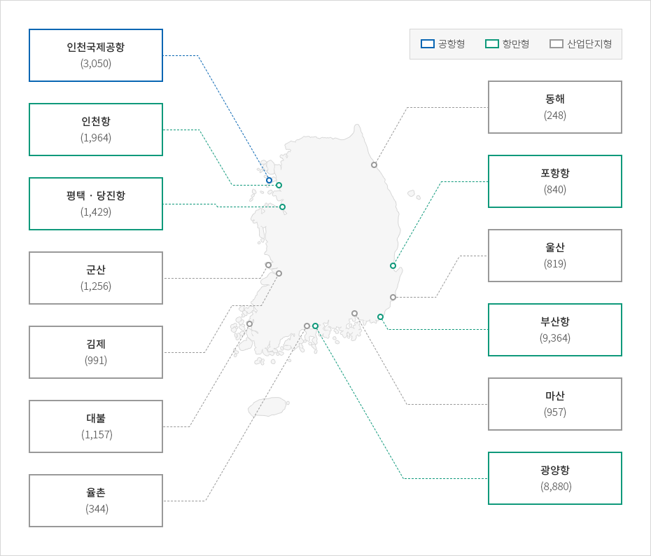

자유무역지역
- Home
- 투자의 기회
- 외국인투자기업 중점유치 지역
- 자유무역지역
산업입지에는 경제자유구역, 외국인투자지역 및 자유무역지역 등의 외국투자가를 지원하기 위한 지역이 있으며, 입지는 임대 또는 분양의 형태로 지원된다. 이러한 지역은 일정 요건 충족 시 입지지원 뿐만 아니라 조세감면이 적용되며 다른 법령에서 제한되는 사항에 대한 예외가 적용되는 경우도 있다.
자유로운 제조, 물류, 유통 및 무역활동 등이 보장되는 특별지역으로서, 외국인투자에 대해서는 관련법령에 따라 조세 및 임대료 감면, 지원시설 등 각종혜택을 부여하고 있다. 특히 관세유보지역이라는 점에서 어느 지역보다도 수출입 활동에 유리하다.
자유무역지역 개념도

-
해외
- 반입 관세면제
- 반입 관세면제
-
자유무역지역(비관세지역)
- 국토 계획법상 공장설립이 가능한가?
-
국내
- 국내지역 물품반입 수입간주(수입통관)
- 국내지역 물품반입 수입간주(수입통관)
※출처 : 산업연구원, 「외국인투자 유치 경제특구의 내실화 방안 연구」, 2013
자유무역지역 지정 현황


-
공항형
- 인천국제공항(3,050)
-
항만형
- 인천항(1,964)
- 평택 · 당진항(1,429)
- 포항항(840)
- 부산항(9,364)
- 광양항 (8,880)
-
산업단지형
- 군산(1,256)
- 김제(991)
- 대불 (1,157)
- 율촌 (344)
- 동해(248)
- 울산(819)
- 마산(957)

※출처 : 산업연구원, 「외국인투자 유치 경제특구의 내실화 방안 연구」, 2013